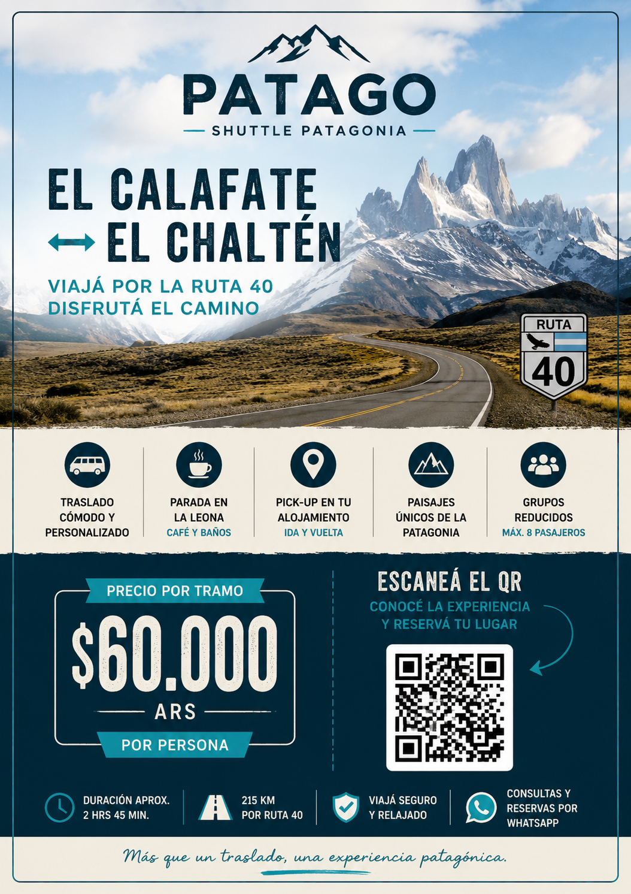
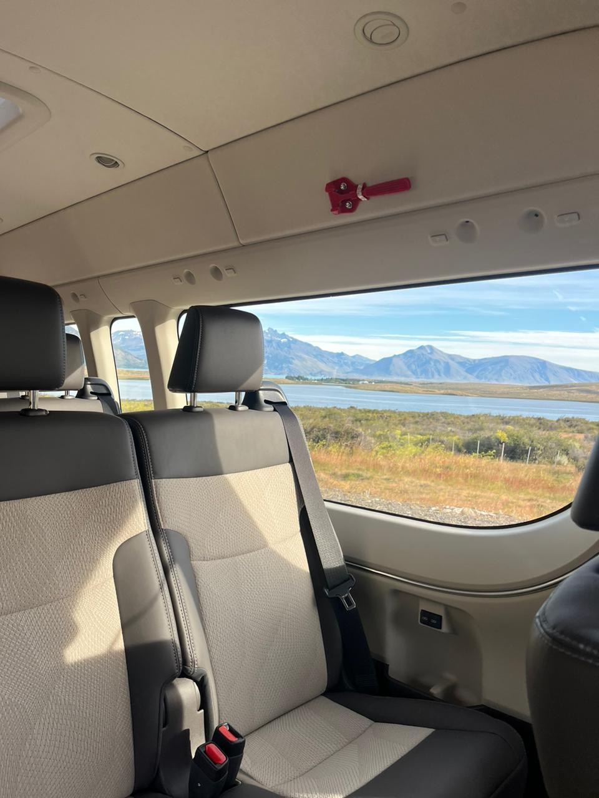
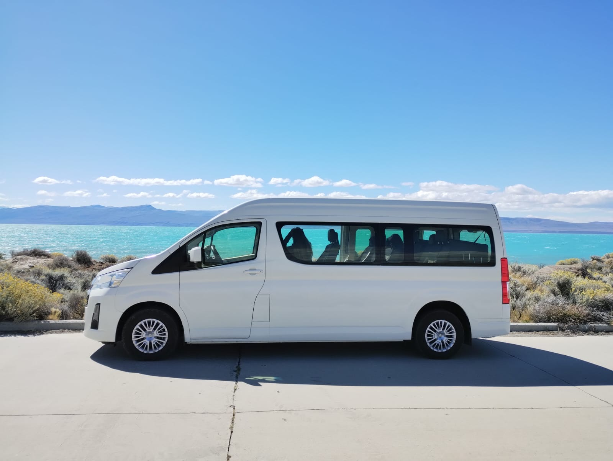

01 · SALIDA
Te buscamos en tu hotel
Comenzamos el viaje directamente desde tu alojamiento.

Un traslado pensado para disfrutar el camino: recogida en tu hotel, viaje por la Ruta 40 y una pausa en La Leona para tomar un café, ir al baño y conocer un lugar histórico de la Patagonia.
Queremos que el trayecto entre El Calafate y El Chaltén sea mucho más que un traslado. Viajás cómodo, con recogida en tu alojamiento, disfrutando de los paisajes patagónicos y haciendo una parada para descansar en La Leona.
Comenzamos el viaje directamente desde tu alojamiento.
Recorremos uno de los paisajes más emblemáticos de la Patagonia.
Parada en La Leona, sitio histórico, para tomar un café, ir al baño y descansar.
Al llegar a El Chaltén, te dejamos en tu alojamiento para que comiences tu estadía.


Subite, relajate y disfrutá del paisaje. PATAGO conecta El Calafate y El Chaltén con una propuesta de traslado cuidada, cómoda y pensada para viajeros que quieren aprovechar también el camino.
El precio corresponde al traslado entre El Calafate y El Chaltén, con recogida en hotel y parada en La Leona.
Consultá disponibilidad y reservá tu lugar en PATAGO Shuttle.
RESERVAR / CONSULTARWhatsApp: +54 9 2392 40-4491